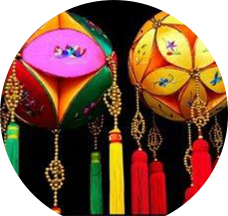
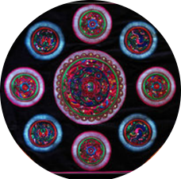
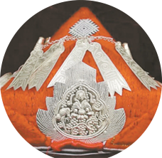
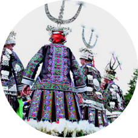
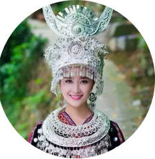

特色节日
节日穿戴
-


绣球
壮乡人民的吉祥物，壮乡青年男女爱情的信物，内中喻示着“生育兴旺”之意。绣球内包有五谷，还象征着生长、希望、平安之意，希望年内“五谷丰登”。
-

胸兜花
侗族妇女胸围花饰，纹样多采用喜鹊、谷穗、荔枝等花鸟纹样，习惯以湖蓝色作为底纹，与各种色彩的花纹形成强烈对比，配以铜钱纹样，含富贵吉祥之意。
-

三角帽
老年妇女戴青色的三角帽。寓意四级常青、长命百岁；中年妇女戴蓝色的三角帽，寓意风调雨顺、兴旺发达；年轻姑娘则戴花布蒙成的三角帽，寓意山花烂漫、前程似锦。
-

百鸟衣
又称芦笙衣，是节日的象征，在苗族眼里，它神圣、庄严、华贵、美丽。每当节日来临，他们最想穿的就是这件衣服，穿上后便有了山之魂，水之灵，花之容。
-

苗族头饰
苗族银饰以大为美的艺术特征是不言而喻的，苗族大银角几乎为佩戴者身高的一半便是令人信服的例证。堆大为山，呈现出巍峨之美；水大为海，呈现出浩渺之美。
节日美食